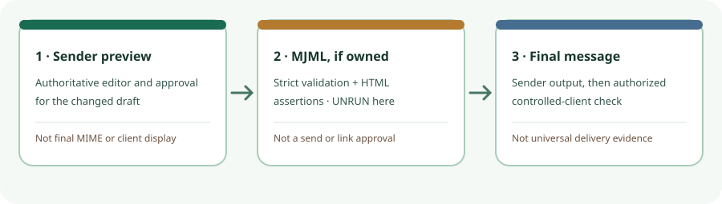

Email draft check · 30 Oct 2026 · documentation review
Changed an email CTA? Check the sender first; compile only if you own MJML source.
For a one-line CTA or preheader edit in an approved visual editor, use that editor’s governed preview and test path first. A local MJML compile can add a draft-to-HTML check when the team already maintains MJML templates. Compiler test: UNRUN. No exact-version local compile, output HTML or before/after diff was obtained for this report.

Three gates for one edit
| Gate | Check | Does not prove |
|---|---|---|
| 1. Existing sender/editor | Review the changed creative, CTA or visible preheader, and approval state in the system that owns the authoritative template. Its exact preview and test behavior depend on the sender. | Final MIME, recipient eligibility, or display in every email client. |
| 2. Local MJML compile—conditional | If MJML source is owned, pin mjml@5.4.1, set strict validation explicitly, compile both versions, and assert the intended CTA anchor and preheader against an independent change record. | Anything observed in this report: the compiler did not run. A future pass would still not prove the business-approved URL, ESP rewrites, sending, client rendering or consent. |
| 3. Final message and client | Compare sender-produced HTML/text, destination and preheader after substitutions or rewriting; inspect a controlled message in the relevant client if authorized. | All-client rendering, provider acceptance, inbox placement or campaign effect. A local SMTP sink is narrower still. |
The earlier Mailpit audit concerns a local SMTP capture, not client delivery. The planned-link checker compares URL strings, not compiled email. The one-click fixture checks final-message header strings against a list mapping. These are separate checks; none was repeated here.
What the source establishes
The official v5.4.1 release is dated 10 September 2026. The release list showed it as the latest stable version on the research date; the separately listed v6 alpha is a pre-release, not this pin. Release notes mention a strict-validation include crash fix and dependency updates; that is maintenance evidence, not a rendering or security test.
The tagged repository licence and tagged mjml package manifest say MIT. The package declares the CLI, core, preset and validator packages at exact 5.4.1, plus Babel runtime; the CLI manifest also says MIT. This is a narrow finding for those tagged sources, not a licence audit of every transitive dependency, hosted editor, or template asset. The private monorepo root manifest is not the published package manifest. The tagged package manifests do not declare a stable-version Node minimum; transitive compatibility was not verified.
The tagged CLI README documents local installation, validation exit codes and HTML output. Its validation-default wording differs from the living validation guide; set --config.validationLevel=strict rather than relying on a default. These are documented commands and claims, not outcomes observed here.
A suitable fixture still needs a fixed source
The first-party card.mjml example has one CALL TO ACTION button with a placeholder href="#", so it is a simple CTA-edit lead. The inspected web view has no <mj-preview>; it cannot test a preheader edit without a different template. The MJML preview documentation describes that source element. The example also contains other placeholder links and remote image/font references. It is not an approved campaign, and its moving master view was not fixed to a local commit artifact.
Observation limit: exact mjml@5.4.1 and a fixed-commit template were not obtained for a local no-send run. No strict validation, malformed-input probe, compiled HTML assertion, output diff, image fetch or email send occurred. This is an unrun compiler gate, not a failed MJML validation or evidence that the compiler cannot help.
Next check, if owned MJML is available
- Pin and hash the exact package, locked dependencies and first-party template commit. Keep the fixture free of email credentials and recipients.
- Copy the template; change only the intended CTA to a reserved
.invaliddestination. Edit preheader text only in a template that actually contains it. Hash both source versions. - Run explicit strict validation and compile each version. Record commands, exits, errors and HTML hashes. Assert the expected button’s new
href, absence of its old value, and any preheader change. Probe one malformed copy and record its actual validator result. - Diff generated HTML and review every unexpected change. Then perform sender-specific approval, final-message, link, consent, unsubscribe and controlled-client checks separately. Compilation alone cannot authorize a send.